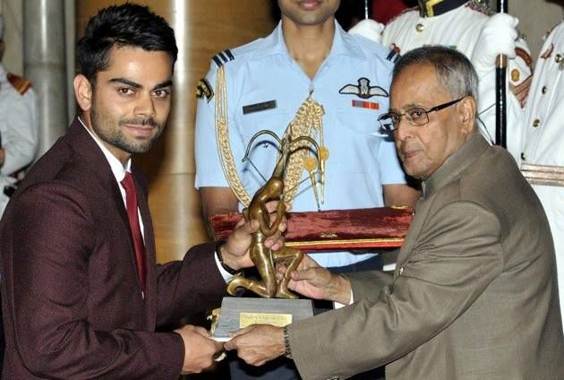

Awards

Virat Kohli Receives Arjuna Award
Virat Kohli receives Padma Shri award

Virat Kohli bags best international cricketer award for last two seasons at India's annual cricket awards
Virat Kohli Named BCCI Cricketer Of The Year, Mithali Raj Gets Top Women's Player Award